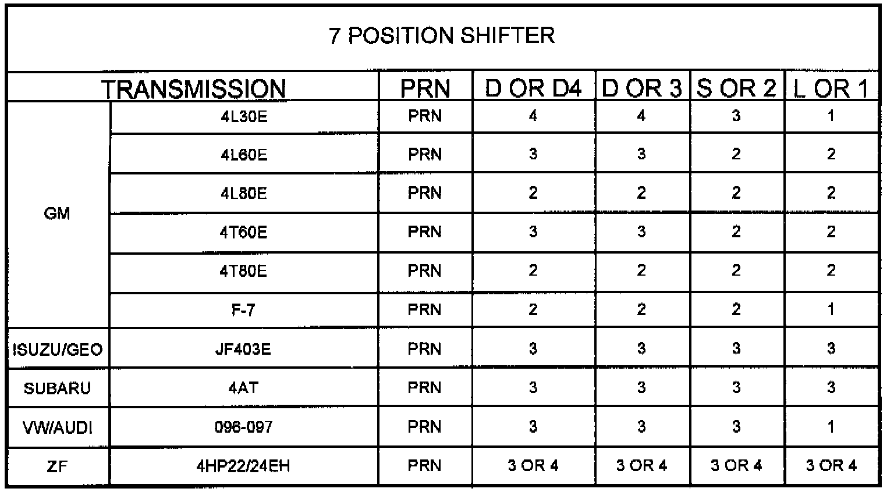
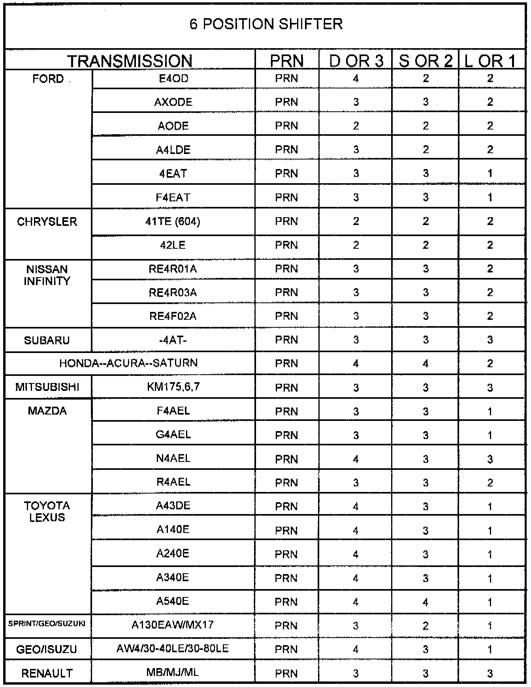

A/T - Failsafe Modes
TECHNICAL BULLETIN # 191DATE: Oct. 93
TRANSMISSION: None
SUBJECT: Failsafe Modes
APPLICATION: General
FAILSAFE MODES
Quite often you will find late model vehicles with computer shifted transmissions coming in that start off in "D" in the wrong gear. Instead of 1st, they take off in 2nd, 3rd or 4th gear.
This can happen for several different reasons, caused by either internal transmission problems, or external control system problems.
Internal transmission causes of this problem can be faulty solenoids or stuck valves.
External control systems can also cause wrong gear starts. Two common external causes are:
^ a complete loss of power or ground to the control system.
^ a failsafe protection strategy initiated by the computer to protect itself or the transmission from an observed problem.
Both the "No Power" problem and the "Fail Safe Strategy" problem result in the same wrong gear start condition. The gears that you get in each shifter position are the same.


Use the charts to see if the unit you have with wrong gear starts is in "Fail" or "No Power" mode. If so, you are probably looking for an electrical problem. If you have gears other than what is shown on this chart, you probably have a valve body or solenoid problem.